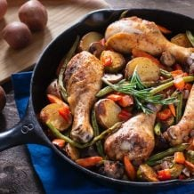
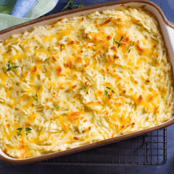
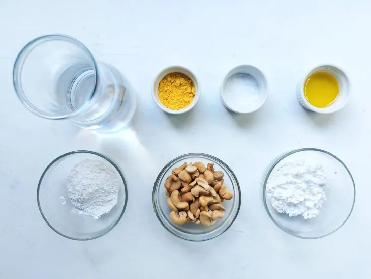
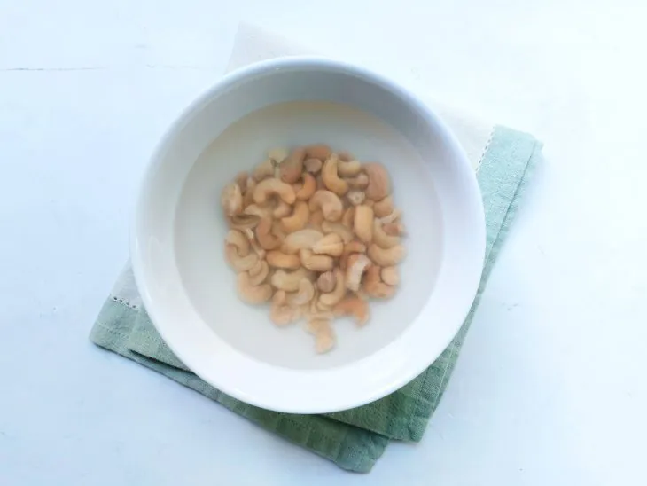
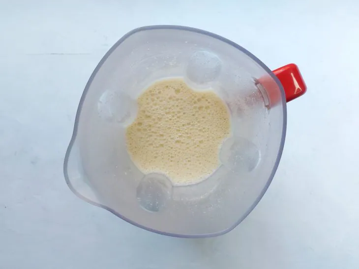
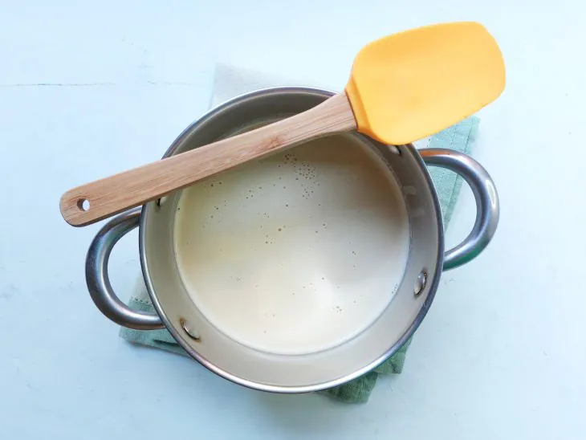
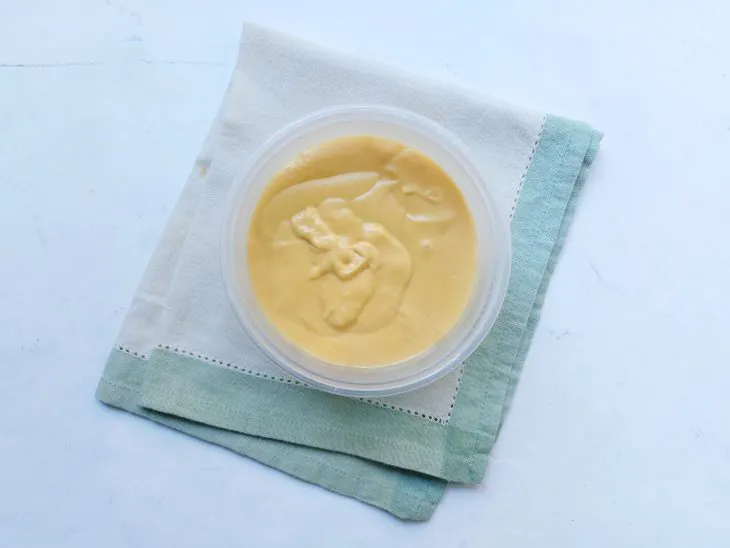
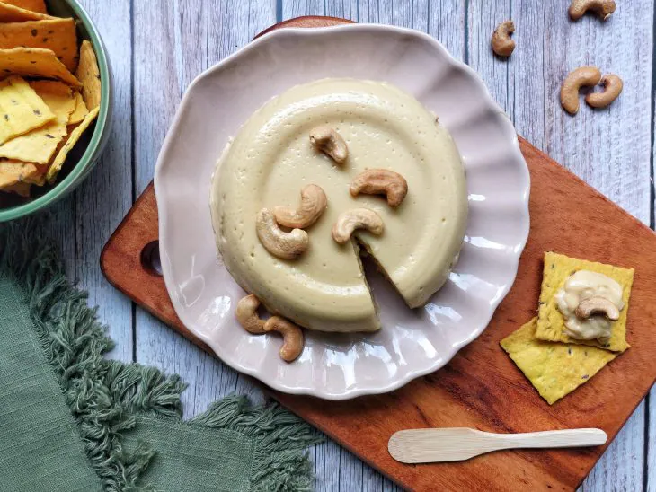

57 receitas com frango que são deliciosas e fáceis de preparar
42 receitas com peito de frango práticas e irresistíveis
32 receitas de filé de frango para variar o cardápio do dia a dia

10 receitas de fricassê de frango cremoso que fazem sucesso na mesa
Queijo vegano com castanha-de-caju
Ingredientes
Modo de preparo

Reúna todos os ingredientes;

Coloque as castanhas de molho em água quente por 15 minutos, escorra e reserve;

No liquidificador, coloque a água, as castanhas, o sal, os polvilhos , levedura nutricional e o óleo. Bata bem;

Despeje a mistura em uma panela e deixe cozinhar, misturando sempre até engrossar;

Coloque a mistura em um pote untado e leve para gelar;

Sirva e bom apetite!
 42 receitas com peito de frango práticas e irresistíveis
42 receitas com peito de frango práticas e irresistíveis